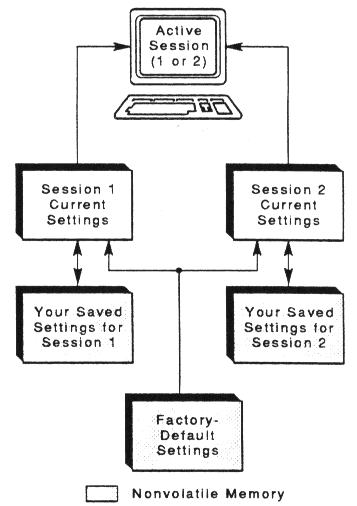
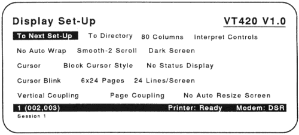
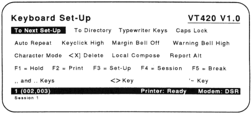
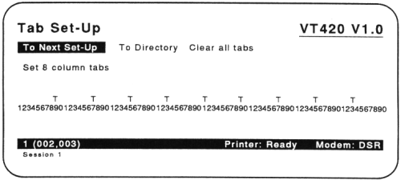

The VT420 has nine set-up screens that list the settings for the terminal's operating features.
You can display these screens and change the settings from the keyboard. This chapter describes set-up and how to use it.
Most set-up features are initially set to a factory-default setting that works with many Digital systems. The VT420 has the factory-default settings permanently stored. If you change settings, you can use the Set-Up Directory to reset the terminal to the factory-default settings.
You can also select and save settings to match your host system. The VT420 saves your selections in nonvolatile memory, along with the factory-default settings. When you shut power off, you do not lose your saved settings.
You can make all changes to set-up features from your keyboard. Also, your host system can change some settings, as described in the VT420 Programmer Reference Manual. See Appendix B to order VT420 manuals.
The VT420 can run two sessions with the host system at the same time. Chapters 2 and 3 explain how to set up the terminal to run two sessions.
When you use two sessions, the terminal stores a separate group of features for each session. Only one session is active at a time. The terminal uses the settings for the active session.
If you forget which session is active, you can check the keyboard indicator line at the bottom of the screen. See the "Keyboard Indicator Line" section in Chapter 4.
NOTE: You cannot switch sessions in set-up. To switch sessions, you must leave set-up and press the F4 (Session) key.

To enter set-up: You press the F3 (Set-Up) key. When you press F3 (Set-Up), information on the screen disappears. (This information reappears when you leave set-up.) Then the terminal displays the Set-Up Directory screen.
The Set-Up Directory lists all other set-up screens. You can select any other set-up screen from the Set-Up Directory.
To leave set-up: You press F3 (Set-Up) again. You can leave set-up from any set-up screen.
NOTE: Most settings that you change take effect when you leave set-up.
When you enter set-up, the Set-Up Directory is always the first screen to appear. You can select any set-up screen from the Set-Up Directory. You can also perform such functions as saving and recalling feature settings.
In set-up, the VT420 always displays the status line and the keyboard indicator line for the active session. Both lines appear at the bottom of the screen. The keyboard indicator line is in the smaller, 132-column font and appears below the status line. The keyboard indicator line is in the same video background as the session at the bottom of the screen. For more information, see the "Keyboard Indicator Line" and "Status Line" sections in Chapter 4.
Set-Up uses a field cursor that highlights a screen entry, or field, in
reverse video. When you enter set-up, the field cursor highlights the
Global field in the Set-Up Directory.
You use the arrow keys to move the field cursor to different features.
Most features in the Set-Up Directory are action fields. When you select an action field, the terminal immediately performs that action. You press the Enter key to select the action field highlighted by the cursor. Most set-up screens have some action fields.
Some actions do not affect the screen, so the VT420 displays a message to let you know if the action was successful. This message appears in place of the keyboard indicator line at the bottom of the screen.
Done message indicates the action is complete. The message
disappears when you press another key.The VT420 displays messages for the following action fields on the Set-Up Directory screen.
The set-up language feature lets you display the set-up screens in one of three languages: English, French, or German. The language you select takes effect immediately in set-up. To change the setting:
Set-Up=English.Table 5-1 describes the Set-Up Directory features.
| Feature | Description |
|---|---|
| Global Display General Comm Printer Keyboard Tab |
These fields select the set-up screen. For example, Global selects the Global Set-Up screen. |
| Clear Display | Clears the screen when you leave set-up. |
| Clear Comm | Clears communications for the active session. Clear
Comm does not affect the on-line/local state, but does
the following:
|
| Reset Session | Resets many VT420 operating features for the active session to their initial state. The screen, communication, character set modes, and user-defined keys are not affected. See the VT420 Programmer Reference Manual. |
| Recall | Sets all set-up features for the active session to their saved values. Clears the screen. |
NOTE: If you are using a modem, |
|
| Save | Saves all current feature settings in all set-up screens for the active session. |
Set-up language
|
Selects the language used to display set-up screens. |
Keyboard dialect
|
Lets you select one of many languages and dialects to match your keyboard. The default is North American Keyboard. The other keyboards are the British, Flemish, Canadian (English), Canadian (French), Danish, Dutch, Finnish, German, Italian, Swiss (French), Swiss (German), Swedish, Norwegian, French/Belgian, Spanish, and Portuguese. |
| Default | Replaces all current settings in all set-up screens with the factory-default settings. This feature may affect both sessions, because the default session configuration is one session. The default feature also:
|
NOTE: If you are using a modem, |
|
| Enable Sessions | Lets you resume an interrupted session. A session can be interrupted by a power failure to the terminal or host. To use this feature, your system must have SSU
software. Also, you must set the terminal comm
ports feature in the Global Set-Up screen to When you select this feature, one of the following messages on the status line:
See Chapter 7 for more information. |
| Disable Sessions | Disables the current SSU sessions. |
| Exit | Lets you leave set-up. You can also press F3 (Set-Up) to leave set-up. |
| Screen Align | Lets you center or rotate the image on the screen. This feature clears the screen and creates a black border around the screen's perimeter. The text area of the screen appears in reverse video from the border. After you select this feature, follow the directions on the screen to align the image correctly. |
There are two ways to select set-up screens. You can move from one screen to the next, in the same order listed on the Set-Up Directory. You can also select any screen directly from the Set-Up Directory.
Moving from Screen to Screen
Each set-up screen has a To Next Set-Up field. To move from one screen
to the next:
To Next Set-Up.Selecting a Screen from the Set-Up Directory
The Set-Up Directory lists all the set-up screens. To display a selected screen:
This section describes how to change, save, and recall set-up settings.
Use the arrow keys to move the set-up cursor to a particular feature on a set-up screen. Most features have two or more possible settings. Use the Enter key to change the setting of the feature highlighted by the cursor. Each time you press Enter, the setting changes. Depending on the feature, the change takes effect immediately or when you leave set-up.
Example
This example shows you how to change the screen display setting from 80 to 132 columns.
Global field.Display field.80 Columns field. Press Enter to
change the setting to 132 Columns.When you change a feature setting, the VT420 uses that setting until you turn the terminal off or change the setting again. To save a new setting, read the next section.
If you make changes to current settings, you can save your changes with the save feature in the Set-Up Directory. This feature saves all current settings (in most set-up screens) for the active session. Even after you turn off the terminal, it retains the saved settings. The VT420 automatically uses these settings each time you turn the terminal on.
Example
This example shows how to save the 132 column setting selected in the previous example.
To Directory field.If you change settings again, you can recall your saved settings. Read the next section.
For some applications, you may want to make temporary changes to current settings. When you are finished using the temporary settings, you can recall your saved settings with the recall feature in the Set-Up Directory.
To recall saved settings:
Recall field.Done message on the status line indicates
the action is complete.NOTE: If you are using a modem, Recall disconnects communication with
the host system.
This screen has features that affect both sessions when you use two sessions. Table 5-2 describes each feature on the Global Set-Up screen.
You use two features on the Global Set-Up screen to set up the VT420 for two sessions.
The feature settings must match the system cable connection on the rear of the terminal. After you connect the terminal's cables and select the set-up features for two sessions (Chapter 3), refer to Chapter 7 to use two sessions.

| Feature and Settings | Description |
|---|---|
| On-line/local | Selects whether or not the VT420 can communicate with a host system. |
|
Lets the VT420 communicate with a host. |
|
Puts the host on hold. The characters you type go directly to the screen. |
| Terminal comm ports | Assigns the communication connectors on the rear of the terminal to session 1 or 2. |
|
Assigns only one session to the Comm1 connector.
The Session indicator does not appear on the
keyboard indicator line. |
|
Assigns session 1 to the Comm1 connector, and session 2 to the Comm2 connector. |
|
Assigns session 1 to the Comm2 connector, and session 2 to the Comm1 connector. |
|
Assigns both SSU sessions to the Comm1 connector. Both sessions use the same communication cable. |
| CRT saver | Increases screen life. |
|
If the terminal is left on but inactive for 30 minutes, the screen goes blank. You can press any key to reactivate the screen. The host can also reactivate the screen by sending any character. |
|
CRT saver feature is disabled. |
| Comm port selection | Selects the 25-pin, RS-232 or 6-pin, DEC-423 connector as the Comm1 port. |
|
Selects the 25-pin RS-232 connector as the Comm1 port. The connector conforms to EIA RS-232 standards. You can use this setting for a connection to a host, terminal server, or modem. |
|
Selects the 6-pin DEC-423 port as the Comm1 port. The connector conforms to EIA RS-423 standards. You can use this setting for a connection to a host or terminal server. |
| Screen refresh rate | Sets the video refresh rate. |
|
This screen refresh rate is recommended in most environments, to minimize flicker. |
|
Used in environments with electrical noise interference. |
| Printer assignment | Selects which session can use the printer port. |
|
Both sessions can use the printer port, but not at the same time. |
|
Only session 1 can use the printer port. |
|
Only session 2 can use the printer port. |
| Default settings are in bold type. | |
This screen has features that affect the way data appears on the screen. Table 5-3 describes the Display Set-Up features.
The VT420 has page memory that can store up to 144 lines of text entered from the keyboard or host system. You can divide the 144 lines into a different number of pages, by using the page arrangement feature on the Display Set-Up screen.
There are many page sizes available (Table 5-3). The default page size is the same size as the default screen display area.
Pages create boundaries. Before you change the standard page size of 24 lines, you may want to check your application's documentation to make sure the application can recognize the new page boundaries. To display a new page, use the Ctrl Next and Ctrl Prev keys.
You use the lines/screen feature on the Display Set-Up screen to select the number of text lines you see on the screen. The ability for the VT420 to display the selected number of lines depends on the following factors:
| If... | Then... |
|---|---|
The page size is less than the
number of Lines/Screen
displayed |
The VT420 displays only the number of lines on the page. |
The page size is greater than
the number of Lines/Screen
display |
The VT420 may display additional lines on the screen. For example, when the status display feature is disabled, an additional line of data is put in place of the missing status line. |
| You use two windows | The number of lines displayed is limited by the screen area allocated to each session. |
The VT420 lets you pan through the information stored on one page or move to another page. The Display Set-Up screen has two features that determine whether or not the display automatically pans to keep the cursor visible: vertical coupling and page coupling. See Chapter 7 for a description of panning.

| Feature and Settings | Description | ||||||||||||||||||
|---|---|---|---|---|---|---|---|---|---|---|---|---|---|---|---|---|---|---|---|
| 80/132 column mode | Selects an 80- or 132-column page width for text. | ||||||||||||||||||
|
The screen display width is the same as the page width. If you change the current setting, page memory clears. |
||||||||||||||||||
Control representation mode
|
Selects whether the terminal processes (interprets) or displays control characters. You can use this feature as an aid for debugging programs. See "Display Controls Mode" in the VT420 Programmer Reference Manual. | ||||||||||||||||||
| Auto wrap | Selects whether or not text automatically wraps to the next line when you reach the right margin. | ||||||||||||||||||
|
When you reach the margin, the VT420 displays each new character in the last column of the line. Each new character overwrites the previous character at that position. | ||||||||||||||||||
|
When you reach the margin, the VT420 displays new characters on the next line. | ||||||||||||||||||
Smooth/jump scroll
|
When you select Smooth-2 Scroll or Smooth-4
Scroll, text on the screen scrolls smoothly.
Smooth-4 Scroll is twice as fast as Smooth-2
Scroll. When you select Jump Scroll, text on the
screen scrolls as fast as the terminal processes it. |
||||||||||||||||||
Light/dark screen
|
Selects light text on dark background, or dark text on light background. Takes effect in set-up. | ||||||||||||||||||
Cursor
|
Selects whether or not to display the cursor. | ||||||||||||||||||
Cursor style
|
Selects a block or underline cursor. | ||||||||||||||||||
| Status display | Selects how and when to use the status line. | ||||||||||||||||||
|
This session does not display a status line outside of set-up. | ||||||||||||||||||
|
The VT420 displays a status line for the current session. | ||||||||||||||||||
|
The host can display information on the status line for this session. | ||||||||||||||||||
NOTE: In set-up, the terminal always displays the status line for the current session. |
|||||||||||||||||||
Cursor blink
|
Selects whether or not the cursor blinks (flashes). | ||||||||||||||||||
| Page arrangement | Selects the number of lines/page. The effect of this feature depends on whether you are running one session or two sessions. | ||||||||||||||||||
|
|||||||||||||||||||
|
Selects 3 pages, with 24 lines/page. | ||||||||||||||||||
|
Selects 2 pages, with 25 lines/page. | ||||||||||||||||||
|
Selects 2 pages, with 36 lines/page. | ||||||||||||||||||
|
Selects 1 page of 48 lines. | ||||||||||||||||||
|
Selects 1 page of 72 lines. | ||||||||||||||||||
|
|||||||||||||||||||
|
Selects 6 pages, with 24 lines/page. | ||||||||||||||||||
|
Selects 5 pages, with 25 lines/page. | ||||||||||||||||||
|
Selects 4 pages, with 36 lines/page. | ||||||||||||||||||
|
Selects 3 pages, with 48 lines/page. | ||||||||||||||||||
|
Selects 2 pages, with 72 lines/page. | ||||||||||||||||||
|
Selects 1 page of 144 lines. | ||||||||||||||||||
| Number of lines/screen* | Selects the number of lines displayed on the screen at one time. | ||||||||||||||||||
|
Selects the 24 lines/screen font. | ||||||||||||||||||
|
Selects the 36 lines/screen font. | ||||||||||||||||||
|
Selects the 48 lines/screen font. | ||||||||||||||||||
Vertical coupling
|
Selects whether or not to automatically pan when the cursor moves beyond the top or bottom border of a window. Automatic panning keeps the cursor visible. | ||||||||||||||||||
Page coupling
|
Selects whether or not to automatically display a new page when the cursor moves to a new page in page memory. For more information, se "Windows" in Chapter 7. | ||||||||||||||||||
|
If the cursor moves to a new page, you cannot see the page or the cursor. | ||||||||||||||||||
NOTE: The page coupling feature is only useful when the page arrangement feature is set to two or more pages. |
|||||||||||||||||||
Auto resize screen*
|
Selects whether or not to automatically change the number of lines/screen when the page arrangement changes. | ||||||||||||||||||
|
Resizes the screen when the page size changes.
|
||||||||||||||||||
| *The number of lines/screen is a user preference feature. If you select the user features locked feature in the General Set-Up screen and enable auto resize screen in the Display Set-Up screen, then the number of lines/screen changes when the page size change. For more information, see "Selecting the Number of Lines/Screen" at the beginning of this section. | |||||||||||||||||||
| Default settings are in bold type. | |||||||||||||||||||
This screen lets you set general features, such as the character set used to display characters on the screen. The terminal mode feature lets the VT420 emulate other VT series terminal for software compatibility. Table 5-4 describes the General Set-Up features.
The General Set-Up screen lets you select the type of character set suited for your computing environment, multinational or national. Both types include the characters for many different languages. However, the multinational mode supports 8-bit characters, while the national mode restricts you to 7-bit characters.
You use the character set mode feature to select multinational or national mode. Chapter 9 shows all the built-in character sets.
This mode supports two 8-bit character sets:
Both character sets have two parts -- the U.S. ASCII character set and a supplemental set.
If you select multinational mode, you use the UPSS (user-preferred supplemental set) feature to select the supplemental character set you prefer, DEC Supplemental or ISO Latin-1 supplemental. You can enter many of the characters in a supplemental set by using compose sequences (Chapter 6).
By default, the VT420 uses the DEC Multinational character set.
This mode supports 12 national replacement character sets (NRCs) built into the VT420. Each 7-bit NRC set is for a particular European language or dialect. You select an NRC set the keyboard dialect feature in the Keyboard Set-Up screen. You can only use one NRC set at a time.
National mode is for 7-bit computing environments. You cannot use the 8-bit multinational character sets in national mode.
NOTE: You cannot select national mode when the keyboard dialect
feature is set to North American.

| Feature and Settings | Description |
|---|---|
| Terminal mode | Selects the terminal's operating mode. The VT420 can emulate any VT series text terminal. |
|
Lets the terminal use all VT420 features. The terminal normally uses 8-bit graphic characters and 7-bit control characters. Select this mode for VT200 and VT300 applications. Digital recommends this mode for most applications. |
|
Lets the terminal use all VT420 features. The terminal uses 8-bit control characters. See Chapter 9 for details. Select this mode for all VT200 and VT300 applications that use 8-bit control characters. This mode is the most efficient, but not yet supported by all applications. |
|
Use this mode for applications that require VT100 compatibility. |
|
Lets the terminal run VT52 applications. |
User defined keys lock
|
Selects whether or not the host system can change user-defined key (UDK) definitions. |
User features locked
|
Selects whether or not the host system can change the settings of the user preference features: auto repeat, smooth/jump scroll, light/dark screen, tab, keyboard lock, and number of lines/screen. User preference features are intended to be controlled by the user or terminal management software, rather than by application software. |
| Character set mode | Selects whether to use an 8-bit multinational character set or a 7-bit national replacement character (NRC) set. |
|
Lets you use one of the 8-bit multinational sets -- DEC Multinational or ISO Latin-1. Both include the 7-bit U.S. ASCII set. You can select the specific set with the UPSS feature listed in this table.* |
|
Lets you use one of the 7-bit NRC sets. You select the specific NRC set with the keyboard dialect feature in the Keyboard Set-Up screen.* |
NOTE: If you set the keyboard dialect feature to |
|
| Keypad mode | Selects the type of characters sent by the numeric keypad. |
|
The keypad sends the numbers shown on the keycaps (using ASCII code).† |
|
The keypad sends control sequences (used with some applications).† |
Cursor key mode
|
Selects whether the arrow keys send ANSI cursor control sequences or application-specific control functions.* |
| New line | Selects how the Return key works. |
|
Pressing Return sends a carriage return character. The VT420 does not automatically move the cursor to a new line. |
|
Pressing Return sends a carriage return and a line feed. Used for some non-Digital applications. |
| User-preferred supplemental set (UPSS) | When the character set mode feature is set to
8-bit Characters, this feature selects the 8-bit
supplemental character set. |
|
Selects the DEC Supplemental character set, which is part of the 8-bit DEC Multinational set. See Chapter 9. |
|
Selects the ISO Latin-1 supplemental character set, which is part of the ISO Latin-1 multinational character set. |
Terminal ID
|
Selects the device attributes response (terminal ID). Some applications require specific responses. This response lets the host system know specific operating attributes of the terminal. |
NOTE: If your operating system does not recognize the |
|
| Update method | Selects how and when to update page memory for the inactive session. |
|
Updates page memory for the other session whenever the terminal is not busy with the active session for one second. |
|
Updates page memory for a session whenever the terminal is not busy with the other session. Neither session has priority. |
|
Prevents updates to page memory for the inactive session. |
| *Chapter 9 shows the VT420 character sets. | |
| †The setting is not saved in nonvolatile memory. | |
| Default settings are in bold type. | |
This screen lets you set up the terminal to communicate with your host system. The default settings are those commonly used on Digital systems. Make sure the settings you use match the communication settings of your system.
This screen also includes features for use with modems. Chapter 8 has more information on modems.
If you use the printer connector to connect a second host system to the
terminal, the Communications Set-Up screen indicates which port is in
use for the current session. The term Comm or Print appears on the top line
of the set-up screen.
Table 5-5 describes the Communications Set-Up features. For more information, see VT420 Programmer Reference Manual.

| Feature and Settings | Description |
|---|---|
Transmit speed
|
Selects the baud rate the VT420 uses to send data
to the host system. The transmit baud rates range
from 300 to 38400 bits/second. The default setting of
Transmit=9600 works with most Digital systems. |
NOTE: The terminal's transmit speed must match the host's receive speed. However, the VT420 can transmit at one speed and receive at another. |
|
Receive speed
|
Selects the baud rate the VT420 uses to receive data
from the host system. Receive baud rates range from
300 to 38,400 bits/second. The default setting is
Receive=Transmit. |
NOTE: The terminal's receive speed must match the host's transmit speed. However, the VT420 can receive at one speed and transmit at another. |
|
XOFF
|
Selects the number of characters the VT420 stores in its input buffer before sending the XOFF flow control signal. If you use one session, you can select an XOFF point of 64 or 128. If you use two SSU sessions, you can select an XOFF point of 64, 256, or 1792 (Appendix C). |
|
Will not send an XOFF signal. |
Data bits/parity
|
Specifies the character format for communicating
with the host system, including:
If you select a 7-bit environment for the host port, you cannot use 8-bit character sets. |
Stop bits
|
Selects the number of stop bits used by the host port. |
| Local echo | Selects whether or not to send the characters you type directly to page memory. |
|
Sends keyboard data to the host system. The host decides whether or not to send the data back to the terminal. |
|
Sends keyboard data both to the host and back to the terminal. |
| Modem control | Configures the terminal to work with various modem features. See Chapter 8. |
NOTE: You must select the 25-pin, RS-232 connector on the VT420 to use all
the modem control features. When you attach a modem to the 25-pin
connector, you must also enable the If you select the 6-pin, DEC-423 connector on the VT420, you cannot use the modem control features. |
|
|
Modem control pins on the DEC-423 or RS-232 connector are not used. |
|
Uses DSR (pin 6) and DTR (pin 1) of the DEC-423 connector. |
| Disconnect delay | Selects the delay time allowed for the VT420 to disconnect from a communication line. The VT420 disconnects when it no longer sees the receive line signal detection (RLSD) signal. The modem control must be enabled. |
|
Selects a 2-second delay (used in most countries except the United Kingdom). |
|
Selects a 60-millisecond delay (used in the United Kingdom). |
|
Does not disconnect from the line when the terminal loses RLSD. |
Transmit rate limit
|
Selects whether or not to limit the terminal to sending 150 to 180 characters/second. A limited rate reduces the interrupt burden on the host system. |
Auto answerback
|
Selects whether or not to send the answerback message to the host system when establishing a connection. |
| Answerback = | Lets you type an answerback message. You can use up to 30 characters. This prompt appears on the status line, indicating the start of the message. If you press the F3 (Set-Up) key while entering an answerback message, the VT420 deletes the new message and saves the old message. |
Conceal answerback
|
Selects whether or not the VT420 will display the answerback message. |
NOTE: If the conceal answerback feature is set to |
|
Modem high speed
|
Selects a baud rate when the modem's speed
indicator line is on. The modem control feature
must be set to The VT420 uses the baud rates selected by the transmit speed and receive speed features. The baud rates range is from 300 to 38,400 bits/second. |
Modem low speed
|
Selects a baud rate when the modem's speed
indicator line is off. The modem control feature
must be set to The VT420 uses the baud rates selected by the transmit speed and receive speed features. The baud rates range is from 300 to 38,400 bits/second. |
| *See the VT420 Programmer Reference Manual. | |
| Default settings are in bold type. | |
This screen lets you control the operation of the keyboard. This includes the function of various keys and the keyboard's keyclick, warning bell, and margin bell.
The typewriter/data processing feature lets you select the standard
typewriter layout or data processing layout on the keyboard. This setting
affects keys that have characters on the right half on their keycaps. If
you select Typewriter Keys, you can type all the legends on the left half
of the keycaps. If you select Data Processing Keys, you can type all the
legends on the right half of the keycaps.
Table 5-6 describes the Keyboard Set-Up features.

| Feature and Settings | Description |
|---|---|
| Typewriter/data processing | Selects which characters are sent by data processing keys. |
|
Selects characters on the left half of the keycaps. |
| Data Processing Keys | Selects characters on the right half of the keycaps. If character set mode is set to |
| Caps/shift lock | Selects the function of the lock key in the down position. |
|
When the lock key is down, the alphabetic keys send their uppercase character. Other keys still send the bottom character on their keycap. |
|
When the lock key is down, all keys send the shifted or top character on their keycap. |
Auto repeat
|
Selects whether or not a key sends its character repeatedly when you hold the key down.* |
Keyclick
|
Selects whether or not keys click when you press them. You can select a high or low volume. |
Margin bell
|
Selects whether or not the VT420 bell sounds when the text cursor approaches the right margin. You can select a high or low volume. |
Warning bell
|
Selects whether or not the VT420 bell rings when (1) operating errors occur or (2) the terminal receives CtrlG. You select a high or low volume. |
| Character mode | Selects whether the keys send their normal characters or report their key position. |
|
Selects ANSI/ISO character encoding for the keyboard. |
|
The keyboard sends control strings that indicate the position of the key pressed. |
| Backarrow key | Selects the function of the <×] key. |
|
<×] sends the DEL (delete) character. |
|
<×] sends the BS (backspace) character. |
| Compose key | Selects the function of the Compose Character keys (or Group Shift key on the German keyboard). |
|
Compose Character starts a compose sequence (Chapter 6). |
|
Compose Character sends a control string to the host to report each down or up key transition. |
|
Compose Character keys are ignored. |
| Alt Function key | Selects the function of the Alt Function keys. |
|
Alt Function sends a control string to the host to report each up or down key transition. |
|
Alt Function keys are ignored. |
| F1 = | Selects the function of the F1 (Hold) key. |
|
F1 stops the scrolling of text for the active session (Chapter 4). |
|
F1 (unshifted) sends a function key sequence to the host. |
|
F1 is ignored. This setting does not disable F1 for a copy and paste operation. |
| F2 = | Selects the function of the F2 (Print) key. |
|
F2 performs the local print functions described in Chapter 8. |
|
F2 (unshifted) sends a function key sequence to the host. |
|
F2 is ignored. |
| F3 = | Selects the function of the F3 (Set-Up) key. |
|
F3 is used to enter or leave set-up. |
|
F3 (unshifted) sends a function key sequence to the host. To enter set-up after you disable this key; log out, turn off the terminal, wait 10 seconds, then turn on the terminal and make F3 the first key you press. |
|
F3 is ignored. |
| F4 = | Selects the function of the F4 (Session) key. |
|
Pressing F4 switches the active session when you use two sessions (Chapter 8). |
|
F4 (unshifted) sends a function key sequence to the host. |
|
F4 is ignored. |
| F5 = | Selects the function of the F5 (Break) key. |
|
F5 (unshifted) sends a break signal. |
|
|
|
F5 (unshifted) sends a function key sequence to the host. |
|
F5 is ignored. |
| ,, and .. keys† | Selects the function of the shifted comma and period keys. |
|
The comma key sends a comma when unshifted and a < character when shifted. The period key sends a period when unshifted and a > character when shifted. |
|
The shifted comma key sends a comma. The shifted period key sends a period. |
| <> key† | Selects the function of the <> angle bracket key. |
|
<> sends a < when unshifted and a > when shifted. |
|
<> sends a ` when unshifted and a ~ when shifted. |
| `~ key† | Selects the function of the `~ key. |
|
`~ sends a ` when unshifted and a ~ when shifted. |
|
`~ sends an escape (ESC) character. |
| *The following keys never repeat: F1, F2, F3, F4, F5, Return, Ctrl, Alt Function, Compose Character, and lock. | |
| † This feature applies only to the North American/United Kingdom keyboard. | |
| Default settings are in bold type. | |
This screen lets you set the number of tab stops on a line. Tab stops on the screen are similar to tab stops on a typewriter. When you press the Tab key outside of set-up, the cursor advances to the next tab stop. Table 5-7 describes the Tab Set-Up features.
There is one tab stop field for each column on the screen. You can use a screen display of 80 or 132 columns wide. See the 80/132 column mode feature in the Display Set-Up screen.
You can use the arrow keys or the Tab key to move the cursor to any tab stop field. Press the Enter key to place a T in a blank field or erase a T from that field. The following figure shows the default tab stop settings.
NOTE: You cannot put a tab in column 1.

| Feature | Description |
|---|---|
| Clear all tabs | Removes all current tab settings shown on the Tab Set-Up screen. |
| Set 8 column tabs | Automatically sets one tab every eight columns, starting at column 9. |